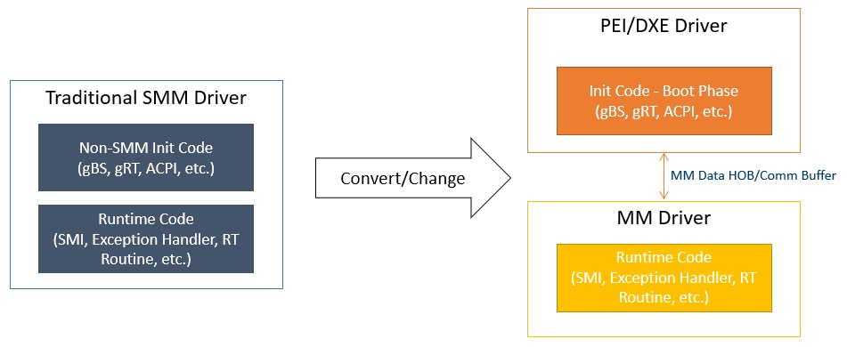
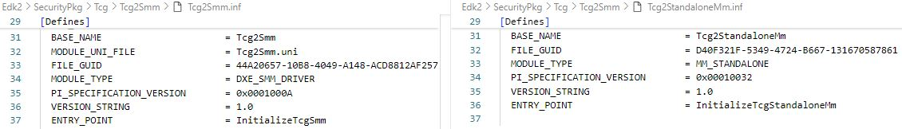
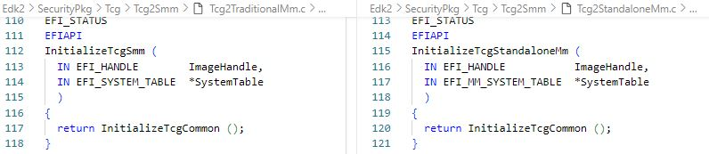
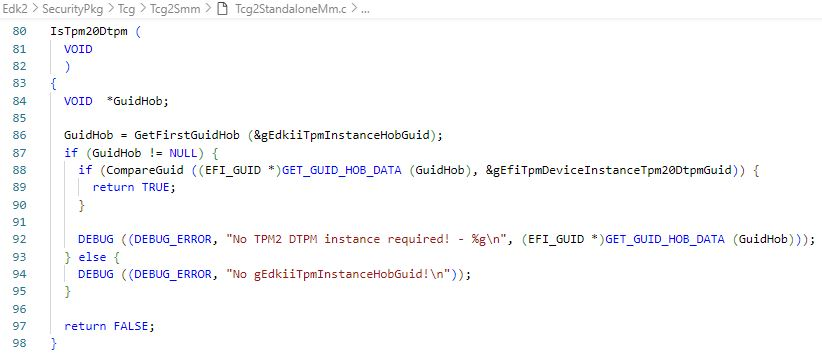
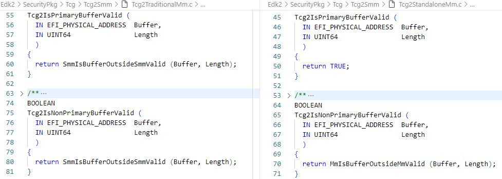

SMM to MM Porting Guide
Porting Design Overview
This section provides instructions on how to convert traditional SMM drivers to MM drivers. A traditional SMM driver may need to be split into one or more drivers when transitioning to a Standalone MM driver:
PEI/DXE Driver: If the traditional SMM driver contains non-MM initialization code:
- The PEI driver can be used to either unblock memory or prepare required data for runtime code and pass the data via HOB or Comm PPI/Protocol.
- The DXE driver might be needed to handle any requirements involving
gBS,gDS,gRT, or ACPI-related services.
Standalone MM Driver: Abstracted from the traditional SMM driver.
The figure below illustrates how to convert a traditional SMM driver to an MM driver:

Figure 2: SMM to MM Conversion
Checkpoints in Converted MM Driver
To ensure the converted Standalone MM driver is functional, the following checkpoints should be verified:
Checkpoint 1: Check Access to Dynamic PCD
Dynamic PCD cannot be used in Standalone MM as it relies on services from the PEI or DXE phases, violating the independence principle of Standalone MM. Instead:
- Use static PCD or feature PCD.
- Alternatively, store the PCD value in a HOB and retrieve it in Standalone MM.
Checkpoint 2: Confirm Necessary HOBs Have Been Migrated to MM HOB Database
Refer to section MM HOBs for details. Note: HOB creation cannot depend on the end of the PEI notify event if the HOB needs to be accessed in MM. This is because the
StandaloneMmIplPEIM is dispatched before the end of PEI, leaving no opportunity for the IPL to migrate newly created HOBs to the MM HOB database.Checkpoint 3: Check Dependencies on
gBS,gDS,gRT, or ACPI-Related ServicesIf the original SMM driver depends on DXE protocols (e.g.,
gBSorgDS), it can only be used during the DXE phase. And ACPI tables must be installed during the DXE phase.Checkpoint 4: Check Access to Non-MMRAM
Non-MMRAM access typically falls into the following cases:
- Case 1: Accessing a HOB that contains a pointer or address pointing to non-MMRAM.
Use
MmUnblockMemoryRequest()in the PEI phase before theStandaloneMmIplentry point to allow access to the buffer from the MM environment. - Case 2: The registered SMI handler uses
gMmst->MmiHandlerRegister(SmiHandler, &CommunicationGuid, ...). If it accesses another buffer pointed from theCommBuffer, modify the MM driver to embed all communication data within theCommBufferitself. - Case 3: The registered SMI handler uses
gMmst->MmiHandlerRegister(SmiHandler, NULL, ...)or MM Child Dispatch protocols (e.g.,SwDispatch->Register). If it accesses any non-MMRAM buffer, useMmUnblockMemoryRequest()in the PEI phase before theStandaloneMmIplentry point.
- Case 1: Accessing a HOB that contains a pointer or address pointing to non-MMRAM.
Use
Checkpoint 5: Validate Primary & Non-Primary Buffers
Refer to section Non-MMRAM Access for definitions of Primary and Non-Primary Buffers. Both types of buffers used by MM drivers should be validated for accessibility before use:
- Use
XXXIsPrimaryBufferValid()to validate theCommBuffer. - Use
XXXIsNonPrimaryBufferValid()to validate non-MMRAM memory pointed from theCommBufferor MM HOB.
- Use
Sample: SMM to MM Conversion
The Tcg2 SMM and MM modules will be used as a sample to highlight the key points to consider when converting a traditional SMM module to an MM module:
Edk2\SecurityPkg\Tcg\Tcg2Smm\Tcg2Smm.infEdk2\SecurityPkg\Tcg\Tcg2Smm\Tcg2StandaloneMm.infModule Type
Traditional SMM uses
MODULE_TYPE = DXE_SMM_DRIVER. Standalone MM usesMODULE_TYPE = MM_STANDALONE.
Figure 3: Tcg2 SMM and MM Module Type
Entry Point
Traditional SMM uses the
EFI_IMAGE_ENTRY_POINTentry point. Standalone MM uses theMM_IMAGE_ENTRY_POINTentry point.
Figure 4: Tcg2 SMM and MM Entry Point
HOB to Replace Dynamic PCD
Refer to Checkpoint 1. The
gEdkiiTpmInstanceHobGuidis built for the value from the dynamic PCD (PcdTpmInstanceGuid) in the PEI module (Edk2\SecurityPkg\Tcg\Tcg2Config\Tcg2ConfigPei.inf). It will be used to replace the dynamic PCD usage.
Figure 5: Tcg2 HOB to Replace PCD
Handle ACPI-Related Operations in DXE Driver
There is a requirement to provide ACPI methods for TPM 2.0 support. The DXE driver needs to locate the MM communication buffer and protocol, then use it to exchange information with
Tcg2StandaloneMmon the NVS address and SMI value. Details can be found inEdk2\SecurityPkg\Tcg\Tcg2Acpi\Tcg2Acpi.inf.Handle
gBS-Related Services in DXE DriverTraditional SMM can install
gTcg2MmSwSmiRegisteredGuiddirectly by leveraging thegBSservice in the SMM driver entry point. For Standalone MM, a new DXE driver is required to installgTcg2MmSwSmiRegisteredGuidto notify the readiness of the Standalone MM Tcg2 module. Details can be found inEdk2\SecurityPkg\Tcg\Tcg2Smm\Tcg2MmDependencyDxe.inf.Unblock Non-MMRAM for MM Access
The
mTcgNvsglobal variable in the Tcg2 SMM module plays a crucial role in TPM operations, especially when updating the ACPI table and handling SMI callback functions.mTcgNvsis the operation region in the TCG ACPI table and must be a non-MMRAM memory buffer pointed from theCommBuffer. According to Section Non-MMRAM Access, it must be unblocked usingMmUnblockMemoryRequest(). The related operation can be found in theBuildTcg2AcpiCommunicateBufferHob()function inEdk2\SecurityPkg\Tcg\Tcg2Config\Tcg2ConfigPei.inf.Check Primary & Non-Primary Buffer Validity
According to Checkpoint 5, define
Tcg2IsPrimaryBufferValid()andTcg2IsNonPrimaryBufferValid()to validate the Primary and Non-Primary Buffers.
Figure 6: Tcg2 Primary and Non-Primary Buffer Check